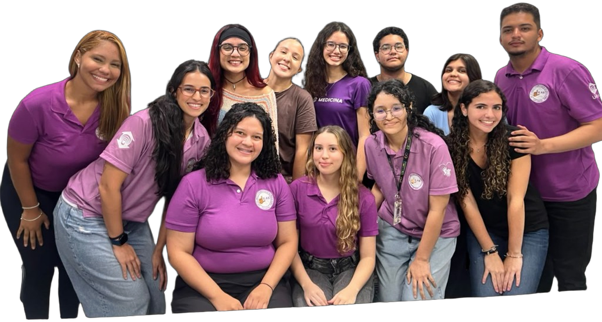

Ensino
Atividades educativas, trocas de conhecimento e aprendizagem voltadas à Libras, à inclusão e à saúde da pessoa surda.
A liga se apresenta
Liga de Libras e Atenção à Saúde da Pessoa Surda
A escuta
2020
Em fevereiro daquele ano, estudantes do CCS da UNIFOR não se sentiam preparados para oferecer um cuidado acessível à pessoa surda. A inquietação veio antes do nome.
2021
A inquietação virou liga. A LILAS se consolidou no Centro de Ciências da Saúde e se abriu aos cursos da área.
Hoje reunimos Fonoaudiologia, Psicologia, Medicina, Odontologia e Educação Física em torno da Libras, da inclusão e do cuidado em saúde.

Propósito
Promover conhecimento sobre Libras e à saúde da pessoa surda, aproximando os estudantes das práticas inclusivas e da comunidade surda.
Também buscamos a sensibilização acadêmica, a acessibilidade comunicacional e um cuidado em saúde mais humano, inclusivo e preparado para diferentes necessidades.
Áreas de atuação
Ensino, pesquisa, extensão e organização — tudo em torno da inclusão e da Libras.
Atividades educativas, trocas de conhecimento e aprendizagem voltadas à Libras, à inclusão e à saúde da pessoa surda.
Produção científica e reflexão sobre acessibilidade, Libras e atenção à saúde da comunidade surda.
Ações que conectam universidade e comunidade, com acolhimento, conscientização e práticas inclusivas.
Conteúdos e registros das ações da liga, ampliando o alcance das pautas de acessibilidade e inclusão.
Secretaria e tesouraria cuidam da estrutura interna, do funcionamento e do acompanhamento das atividades.
Integrantes
Estudantes de várias áreas, unidos pela Libras, pela inclusão e pelo cuidado em saúde.